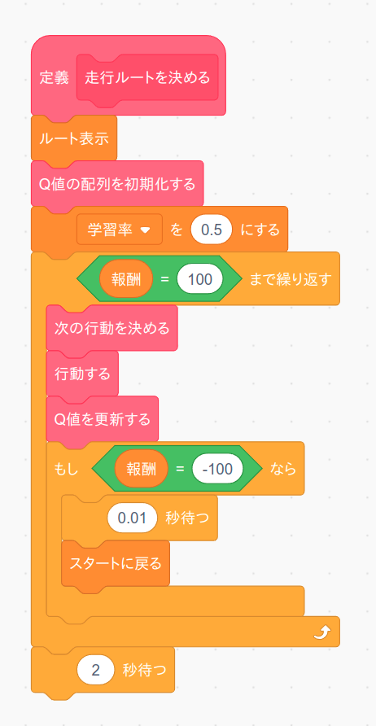
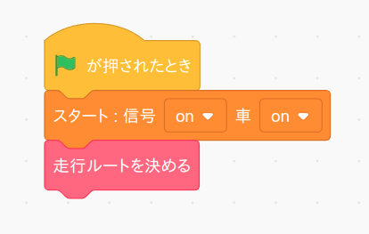
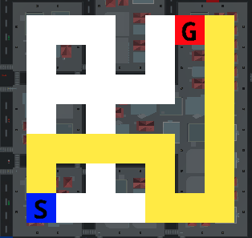

さて用意が全て整ったのでQ学習を使って走行ルートを自動で決めてみましょう。 早速以前作った「走行ルートを決める」ブロックを次の様に変更して下さい。
前のページのプログラムと違って、今回はあらかじめ Q 値をセットしていません。代わりにゴールに着く(報酬 ＝ 100)まで「次の行動を決める」「行動する」「Q値を更新する」を繰り返します。ただし道の外に出た(報酬 = -100)場合はスタート座標に戻るようにしています。
ではこのブロックのテストをしましょう。まず「緑の旗」を押した時に実行するテストプログラムを次の様に変更します。 プログラムを作りましたら「緑の旗」ボタンを押してください。
すると Q 学習を使った学習がはじまり、しばらくするとルートが自動で決まるはずです。
うまく動きましたら「学習率」の数値を変えるとどの様にルートが変わるか試して下さい。 とくに 0 や 1 を試して下さい。
チャレンジ
学習率を1にすればもっとも学習効率が良いはずなのに学習はうまく行きませんね。その理由を考えてみましょう。